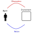
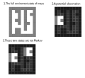
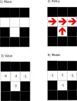
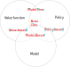

1. Introduction to Reinforcement Learning
목차
- 강화 학습은 무엇인가?
- 핵심 생각들
- Agent의 구성요소
- 강화 학습에 남은 도전들
동기
- 1.물리적 반복 작업에 대한 자동화
- 산업혁명 - 생산라인 등
- 2.정신적 반복 작업에 대한 자동화
- 정보화 혁명 - 계산기 등
- 어떻게 하는지 규칙을 정해서 구현 했음.
- 3.기계가 문제에 대한 해법을 자신이 찾음
- AI 혁명
- 결정을 내리는 방법에 대한 자동 학습이 필요해짐
강화 학습이란 무엇인가?
- 주어진 상황에서 최선이라 생각되는 행동을 학습하는 것.
- 상호작용을 통해서 결정을 내리는 법을 학습하는 과학
- 환경과 상호 작용 하면서 학습함.
- 지도 학습과 다른점
- 동적임 (수동적이지 않음)
- 상호작용이 잇따라 일어남 (다음 행동은 이전의 행동에 의존성이 있을 수 있음)
- 목표 지향적임
- 예제 없이 최적 행동 양식을 찾을 수 있음.
- Learn by try and error.
- 사고의 틀과 알고리즘 양쪽 다 지칭
상호작용 loop

상호작용을 통해서 결정을 내리는 법을 학습하는 과학
위의 정의를 달성하기 위해 고려해야 하는 것들 - 시간 - 행동에 대한 결과(장$\cdot$단기적) - 경험의 축적 - 미래에 대한 예측 - 불확실 성에 대한 처리
강화 학습의 특징
다른 학습들과 다른 부분 - 지도 학습이 아님, 보상 신호만 있음 - 피드백이 지연 될 수 있음(즉각적이지 않아도 됨) - 시간이 중요함 - 이전 결정이 이후 상호 작용에 영향을 줌
핵심 생각들
- 환경
- 보상 신호
- Agent
- Agent state
- Policy
- Value function
- Model (Optional)
Agent and Environment
각각의 단계 t 에
- Agent
- Observation $O_{t}$ 을 받음(그리고 보상$R_{t}$ 을 받음)
- 액션을 $A_{t}$ 행함
- The environment
- 액션 $A_{t}$를 받음
- Observation $O_{t+1}$ 을 생성(그리고 보상$R_{t+1}$ 을 생성)
def agent(time, observation, reward):
// 가장 좋은 action 선택
return action
def env(time, action):
// action에 의해 반응한 환경과 보상을 리턴
return (observation, reward)
t = 0
action, observaion, reward = None, None, None
while True:
t++
action = agent(t, observation, reward)
observation, reward = evn(t, action)
보상
- 보상 $R_{t}$는 scalar 값이다.
- Agent 가 step t 에 얼마나 잘했는지에 대한 피드백 신호
- Agent 의 목표는 누적 보상을 최대값으로 만드는 것이다. $$ G_{t} = R_{t+1} + R_{t+2} + R_{t+3} + ... $$
- 우리는 위의 누적 보상을 the return 이라고 할 것이다.
보상 가설
어떠한 목표도 누적 보상을 최대화 시키는 방법으로 형식화 할 수 있다.
Values
특정 상황 s 에서 누적 보상의 기대값을 value 라고 하자.
$$ \begin{align} \mathtt{v}(s) = & \mathbb{E} [ G_{t} | S_{t}=s ] \\ = & \mathbb{E} [ R_{t+1} + R_{t+2} + R_{t+3} + ... | S_{t}=s ] \end{align} $$
- 이제 agent의 목표는 value를 최대화 하는것이라고 재 정의 할 수 있다.
- Reward 그리고 Value 는 특정 상황에서 특정 action 이 얼마나 적합한지의 정도를 나타낸다(지도 피드백이 필요 없다.)
- retuns 와 values 는 재귀로 정의 될 수 있다. $$ G_{t} = R_{t+1} + G_{t+1} $$
순차적 Action들
- value 값을 최대화 하는 actions 을 고르는걸 목표로 하자.
- 이제 agent의 목표는 특정 action들을 선택해서 value를 최대화 하는것이라고 재 정의 할 수 있다.
- actions 는 장기적 결과를 가질 수도 있다.
- 보상은 지연 될 수 있다.
- 장기적 보상을 위해 즉각적인 보상을 포기하는게 좋을 수 도 있다.
- 헬리콥터 연료 충전(몇시간 후 에 추락 할 수 있으니)
- 주식 투자 (장기적으로 이익이 더 올때)
- states 로 부터 actions 로의 맵핑을 policy 라고 한다. $$ \text{policy} = f: \text{states} \to \text{action} $$
Action values
value 의 조건식에 action 을 넣을걸 action value 라고한다.
$$ \begin{align} q(s, a) = & \mathbb{E}[ G_{t} | S_{t}=s, A_{t}=a ] \\ = & \mathbb{E} [ R_{t+1} + R_{t+2} + R_{t+3} + ... | S_{t}=s, A_{t}=a ] \end{align} $$
Agent
State
- Actions는 agent의 state 에 의존성이 있다.
- 행위자와 환경은 각각 내부 state를 가질 수 있다.
- 간단한 예제에서는 state 가 한개 일 수 있다.
- 보통 상태가 엄청 많다. - 가끔씩 무한대의 경우도 있다.
- 행위자의 상태와 환경의 상태는 일반적으로 다르다.
- 행위자는 환경의 모든 상태를 모를 수 있다.
Environment state
- 환경의 내부 상태
- 일반적으로 행위자가 알 수 없다.
- 만약 안다고 해도 상관없는 정보를 많이 가지고 있을 수 있다.
Agent state
- (Observation, action, reward)들의 역사 $$ H_{t} = O_{0}, A_{0}, R_{1}, O_{1}, ... ,O_{t-1}, A_{t-1}, R_{t}, O_{t} $$
- 위의 역사가 행위자의 상태$S_{t}$를 만드는대 사용된다.
- 액션은 상태에 의존성이 있다.
Fully Obervable Environments
행위자가 환경의 전체 상태를 관찰 할 수 있다고 가정 하자. - observation = 환경 상태 - 행위자의 상태가 환경 상태와 같을 수 있다. $$S_{t} = O_{t} = \text{environment state}$$ - 행위자가 Markov decision process 에 있다.
Markov decision processes
MDPs 는 특정 수학적 속성을 의미한다.
- 예를 들어 자연수의 속성은 음의 정수가 아닌 정수 이다.
- 우리는 음의 정수가 아닌 정수를 자연수의 속성을 만족한다고 하고 자연수라고 칭하기도 한다.
정의
-
아래의 조건을 충족하는 결정 과정을 Markov 라고 한다.
- A decision process is Markov if
- p == probability
- joint probability of r, s given $S_{t}, A_{t}$ is same as given $H_{t}, A_{t}$ $$ p(r,s| S_{t}, A_{t}) = p(r,s| H_{t}, A_{t})$$
-
현재를 주면 미래는 과거로 부터 독립적이다.
- The future is independent of the past given the present $$ H_{t} \to S_{t} \to H_{t+1} $$
- 해당 속성을 만족하는 state 를 알게 되면 역사를 버려도 된다.
- 예를 들어
- stationary 환경 상태는 Markov 이다.
- 역사 $H_{t+1}$는 Markov 이다.
Partially Observable Environments
Agent 가 정보의 일부분만 받는다. - 포커카드 게임 - observation 이 Markov 가 아니다. - patially obsevable Markov decision process (POMDP) - 환경 상태값은 Markov 이지만 행위자가 이걸 알 수 없다.
Agent state
- angent state 는 역사에 대한 함수이다. $$ \text{agent state} = f: H \to S $$
-
행위자의 액션은 상태에 의존한다.
-
State update function == f $$S_{t+1} = f(S_{t},A_{t},R_{t+1},O_{t+1})$$
- 행위자는 t 에 있음
- $S_t$ 를 사용해 $A_t$ 를 결정하고 실행.
- 환경이 $R_{t+1}, O_{t+1}$을 생성.
- 행위자는 이제 $t + 1$ 에 있음
- $S_{t+1}$ 을 $f(S_t, A_t, R_{t+1}, O_{t+1})$ 을 사용해 변경
- 관습적으로 t 는 행위자가 환경에서 액션을 보내는 시점임
-
행위자의 상태는 환경의 상태보다 훨씬 작다.
Example
부분 관찰이 가능한 환경에서 행위자의 상태를 만들어보자.

- 행위자는 2번 처럼 환경의 일부분을 observation 으로 받는다.
- 만약 $S_{t} = O_{t}$를 사용했다면 3번 처럼 두개의 다른 observation을 구분 할 방법이 없다.
- 즉 행위자의 상태가 Markov 가 아닌 상태가 되었다.
- 어떻게 하면 행위자의 상태를 Markov 하게 할 수 있을까?
- 행위자가 역사를 사용해 구분 할 수 있는 상태를 만들면 된다.
Partially Observable Enviroments
부분 관찰 환경에서 행위자는 Markov 속성을 같는 상태를 만들어야 한다.
- 행위자의 상태 예제
- 마지막 관찰: $S_{t} = O_{t}$ (위의 미로 예제처럼 만족되지 않을수 있음)
- 모든 역사: $S_{t} = H_{t}$ (양이 너무 많을 수 있음)
- 순차적으로 변화하는 상태: $S_{t} = f(S_{t-1}, O_{t})$
- 위의 미로에서는 시작점을 기준으로 하는 평면 좌표계를 추가하면 됨
- recurrent nerual network 로 구현 될수 있음
- 가끔 메모리 라고도 불림
- 행위자의 상태가 Markov 속성을 만족하게 하기가 쉽지 않은 경우가 많음
- 상태는 좋은 police 와 좋은 value 을 예측하기 위한 충분한 정보를 포함 해야함.
Policy
- Policy 는 행위자의 행동양식을 정의 한다.
- 행위자 상태에서 action 으로 연결되는 함수다. $f: \text{state} \to \text{action}$
- 결정론적 정책: $A = \pi(S)$
- 확률적 정책: $ \pi(A|S) = p(A|S) $
Value function
-
The value function is the expected return condition on state $$ \begin{align} v_{\pi}(s) = & \mathbb{E} [ G_{t} | S_{t} = s, \pi ] \\ = & \mathbb{E} [ R_{t+1} + \gamma R_{t+2} + \gamma^{2} R_{t+3} + ... | S_{t} = s, \pi ] \end{align} $$
-
The discount factor. $ \gamma \in [0, 1]$
- 즉각적인 보상과 장기 보상에 대한 trade-off 를 주는 용도로 사용
- trade-off: a balance achieved between two desirable but incompatible features
- 미로 탈출에서 설정 하면 행위자는 할인 되지 않은최대 보상을 받기 위해 빨리 탈출 할려고 시도.
- 즉각적인 보상과 장기 보상에 대한 trade-off 를 주는 용도로 사용
- Value 는 정책에 의존한다.
- 바람직한 다름 상태를 평가하는대 사용 할 수 있다.
- actions 를 선택하기 위해 사용 할 수 있다.
Bellman equation
- Return 은 재귀적 형식으로 표현 할 수 있다. $G_{t} = R_{t+1} + \gamma G_{t+1}$
- 그러므로 다음과 같다.
- $ a \sim \pi(s) $ action 이 상태 s 일태 policy 에 의해 결정됨을 의미($\pi$ 가 결정론적일 때도 동일)
$$ \begin{align} v_{\pi}(S_{t+1}) = & \mathbb{E} [ G_{t+1} \mid S_{t+1} = s, \pi ] \\ \\ v_{\pi}(s) = & \mathbb{E} [ G_{t} \mid S_{t} = s, A_{t} \sim \pi(s) ] \\ = & \mathbb{E} [ R_{t+1} + \gamma G_{t+1} \mid S_{t} = s, A_{t} \sim \pi(s) ] \\ = & \mathbb{E} [ R_{t+1} + \gamma v_{\pi}(S_{t+1}) | S_{t} = s, A_{t} \sim \pi(s) ] \\ \end{align} $$
- 위의 함수가 있다면 특정 상황에서의 최적 행동을 아래의 식으로 구 할 수 있다.
- 아래식은 policy 에 의존성이 없다.
- 만약 제한 된 상태와 행동이라면 우리는 아래의 방정식을 풀 수 있다. $$ v_{*}(s) = \underset{a}{\operatorname{argmax}} \mathbb{E} [ R_{t+1} + \gamma v_{*}(S_{t+1}) | S_{t} = s, A_{t} = a ] \\ $$
Value Function approximations
- 행위자는 종종 approxmate value 함수를 사용한다.
- 이런 함수가 있다면 우리는 최적화는 아니지만 잘 동작하는 행위자를 만들 수 있다.
Model(optional)
모델은 환경이 다음에 무엇을 할 것인가를 예측하는대 사용된다.
-
다음 환경 상태을 예측 한다. $$ P(s, a, s') \approx P(S_{t+1} = s^{\prime} \mid S_{t} = s, A_{t} = a) $$
-
다음 보상을 예측 $$ R(s, a) \approx \mathbb{E} [ R_{t} \mid S_{t} = s, A_{t} = a ]$$
Maze Example
위에서 정의한 개념들을 미로에 적용 시켜보자.

- 그림1. 환경 전체를 보여준다.
- action: up, down, left, right
- reward: 한 step 마다 -1
- state: agent location
- 그림2. 화살표는 Policy 를 의미한다.
- policy: 상태가 주어졌을때의 행동양식 $ f: \text{state} \to \text{action} $
- 그림3. value 값
- 숫자는 각 상태의 value 값 $ v_{\pi}(s)$ 를 의미
- 그림4. Model
- 그리드의 격자는 다음 상태로의 부분 전이 모델$P_{ss^{\prime}}^{a}$을 의미
- 숫자는 각 상태별 즉각 보상 $R_{ss^{\prime}}^{a}$을 의미
Agent 구분
- Value based
- No policy(implcit)
- Value function
- Policy based
- Policy
- Value function
- Actor Critic
- Policy == actior
- Value function == critic
Agent 구분2
- Model Free
- Policy and/or Value Fuction
- No Model
- Model Based
- Optionally Policy and/or Value Fuction
- Model

Learing and Planning
강화학습에는 크게 두 종류의 문제가 있음
- 학습
- 환경을 모르고 시작
- 행위자는 환경과 상호 작용 함
- 계획
- 행동하지 않고 생각만 하는것.
- 환경 모델이 주어짐
- 행위자는 주어진 모델을 가지고 계획을 생성(상호 작용 없이)
Prediction and Control
- Prediction: Policy 를 주면 미래를 평가함
- 지도학습을 이곳에 사용 할 수 있음.
- Control: 미래를 최적화함 (가장 좋은 미래를 찾음)
- 아래의 식과 연관되어 있음
$$ \pi_{*}(s) = \underset{\pi}{\operatorname{argmax}} v_{\pi}(s) $$
행위자의 구성 요소를 학습 하는 방법
- 모든 구성요소는 함수임
- Policy: $$ \pi: \text{state} \to \text{action} $$
- Value function: $$ v: \text{state} \to \text{value} $$
- Model: $$ P_{ss^{\prime}}^{a}: \text{state} \to \text{next state} \\ R_{ss^{\prime}}^{a}: \text{state} \to \text{reward} $$
- Status updates: $$ f: \text{state, observation} \to \text{new state} $$
- 위의 함수들을 nn 으로 표현 하고 deep learning 방법을 사용해서 최적화 할 수 있음
- 우리는 종종 지도학습의 가정인 idd, 와 stationarity 를 무시하는경우가 많기 때문에 주의 해야함.
Atari game 의 가정
- 게임의 규칙을 알지 못한다고 가정.
- 게임을 하면서 학습함(상호작용)
- 조이스틱을 통해 행동을 하고 픽셀과 점수를 받음.
- 환경 == 아타리 게임
- 액션 == 조이스틱
- Observation == 필셀
- Reward == 점수
Exploration and Exploitation
- Exploration: 정보를 더 모으는것
- Exploitation: 알고있는 정보를 활용해 보상을 최대하 하는것.
- 두개를 잘 조절하는게 중요.